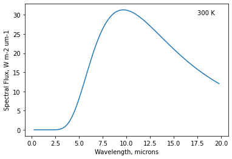

Calculate Planck curves as a function of wavelength and temperature
Contents
Calculate Planck curves as a function of wavelength and temperature¶
© Von P. Walden, Washington State University
%pylab inline
%pylab is deprecated, use %matplotlib inline and import the required libraries.
Populating the interactive namespace from numpy and matplotlib
Dessler, Figure 3.2a¶
c = 2.998e8 # m s-1
h = 6.626e-34 # m2 kg s-1
kB = 1.381e-23 # m2 kg s-2 K-1
l = np.arange(0.25,20,0.25) * 1e-6 # meters
T = 300. # K
B = pi * 2*h*c**2 / (l**5 * (np.exp((h*c) / (l *kB * T)) - 1.)) * 1e-6 # W m-2 um-1
plot(l/1e-6,B)
xlabel('Wavelength, microns');
ylabel('Flux, W m-2 um-1');
text(17.5,30,'300 K');

print(f"Wiens Law gives wavelength of maximum flux at: {(2989/T):3.1f} um.")
Wiens Law gives wavelength of maximum flux at: 10.0 um.
print(f"The Stefan-Boltzmann Law gives the total flux for this object as: {(5.67e-8*T**4):4.0f} W m-2.")
The Stefan-Boltzmann Law gives the total flux for this object as: 459 W m-2.
Dessler, Figure 3.2b¶
l = np.arange(0.25,12,0.05) * 1e-6 # meters
T = 1600. # K
B = pi * 2*h*c**2 / (l**5 * (np.exp((h*c) / (l *kB * T)) - 1.)) * 1e-6 # W m-2 um-1
plot(l/1e-6,B)
xlabel('Wavelength, microns');
ylabel('Flux, W m-2 um-1');
text(10,120000,'1600 K');

print(f"Wiens law gives wavelength of maximum flux at: {(2989/T):3.1f} um.")
Wiens law gives wavelength of maximum flux at: 1.9 um.
print(f"The Stefan-Boltzmann Law gives the total flux for this object as: {(5.67e-8*T**4):4.0f} W m-2.")
The Stefan-Boltzmann Law gives the total flux for this object as: 371589 W m-2.
Dessler, Figure 3.2c¶
l = np.arange(0.01,3.5,0.01) * 1e-6 # meters
T = 6000. # K
B = pi * 2*h*c**2 / (l**5 * (np.exp((h*c) / (l *kB * T)) - 1.)) * 1e-6 # W m-2 um-1
plot(l/1e-6,B)
xlabel('Wavelength, microns');
ylabel('Flux, W m-2 um-1');
text(2.8,90e6,'6000 K');

print(f"Wiens law gives wavelength of maximum flux at: {(2989/T):3.1f} um.")
Wiens law gives wavelength of maximum flux at: 0.5 um.
print(f"The Stefan-Boltzmann Law gives the total flux for this object as: {(5.67e-8*T**4):4.0f} W m-2.")
The Stefan-Boltzmann Law gives the total flux for this object as: 73483200 W m-2.